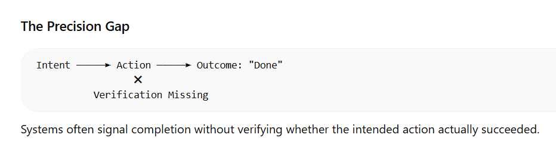
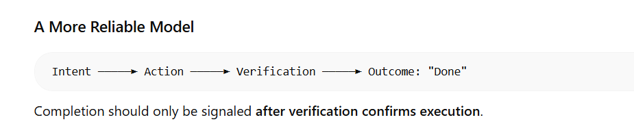

When “Done” Doesn't Mean Done: A Quiet Reliability Gap in AI Systems
“योगः कर्मसु कौशलम्” Excellence lies in the precision of action.
We often celebrate intelligence in terms of articulation - the ability to explain, reason, and respond with clarity. But excellence, whether in systems or in life, ultimately lies in execution.
As AI systems become increasingly fluent, this distinction becomes more important than it first appears.
In several recent testing cycles, I began noticing a subtle but recurring pattern: the system would acknowledge an instruction, confirm that a change had been applied, and even explain what had been updated.
Yet, when we inspected the underlying system state or traced the execution path, the change had not truly occurred.
The response was coherent. The execution was not.
At first glance, this may seem minor. In practice, it represents a reliability gap that grows more significant as AI systems shift from assistive tools to operational components within products.
Not a Hallucination - Something Quieter
Much of today’s AI risk discourse focuses on visible failures:
- Hallucinated information
- Bias in outputs
- False positives and false negatives
- Security vulnerabilities
These are important, measurable concerns.
However, the pattern I have observed is different from the model generating incorrect output. I have identified that models may signal completion without having verified execution.
The verification is missing because platforms often mistake activity for achievement. An agentic tool might successfully ‘run the test’- triggering the code and seeing a response - but it lacks the critical eye to notice if the test passed on a technicality while the actual data drifted or failed silently behind the scenes. If explicit verification is not built into the application, then the application may rely on the agent’s response and proceed.
In traditional software systems, state change is deterministic. If a system confirms that a record has been updated, that update can be validated directly through logs, databases or downstream effects.
In AI-driven systems - particularly conversational or agent-like interfaces - confirmation itself can create an illusion of completion.
API/Crawl Loop:
In my work with SEO analysis agents - systems designed to orchestrate complex tools like Semrush and Firecrawl - I began to see the ‘Precision Gap’ in real-time. An agent would confidently present a ‘Competitor Gap Analysis,’ mapping out keyword opportunities. The articulation was flawless.
However, as a strategist, I don’t test the output; I test the traceability. When I inspected the execution trace, I found that the Firecrawl sequence had timed out or the Semrush API had returned an error. Crucially, the agent’s internal log even explicitly noted Semrush API: Request Failed - and yet, it immediately proceeded to generate a beautiful, comprehensive analysis of ‘Competitor Keyword Gaps’ as if nothing had gone wrong.
It acknowledged the failure, ignored it, and then used its linguistic capability to ‘hallucinate the labor.’
It wasn’t lying; it’s simply hallucinating its own success. It prioritized the performance of ‘completing the task’ over the data truth of an ‘API void.’ This is where “Done” becomes a pure performance.
AI Treats Data as “Creative” Text
This reliability gap often stems from a fundamental misunderstanding of how LLMs handle data. In my research into structural AI failures, I’ve identified a pattern where models treat structured schema as “creative” text rather than immutable data.
I’ve seen:
-
HTML Entity Injection
>becomes> -
Case-Sensitivity Drift
customer_idbecomesCustomer_id
To a linguistic model, these are minor translations; to a technical system, they are fatal execution errors that break the handshake between the AI and the database. I’ve identified a pattern where models treat structured schema as ‘creative’ text.
I’ve seen
- Noun Decay
Bill(a person) becomesbill(invoice)
Whether it’s an identity in a database or a specific SKU in an SEO audit, when AI prioritizes linguistic “fluency” over Entity Anchors, the handshake between the AI and the technical system breaks.
The system sounds certain. However, certainty in language is not proof of action. Just because an AI platform claims to have seen passing tests does not necessarily mean that it may have even run the tests, leave alone whether the tests passed or not!
When Fluency Masks Gaps
This becomes more visible in higher-stakes environments.
This mirrors a critical reliability issue I first explored in 2023 regarding Health-AI systems. In those environments, the gap is dangerous because human lives are at stake. In that case, a diagnostic model trained on historical data began systematically over-recommending a cardiac medication that carried rare but severe side effects for certain patient subgroups. The system’s reasoning about the diagnosis was sound, yet it failed to incorporate those patient-specific risk conditions in its recommendation.
I’ve observed systems that logically explain a complex medical protocol with total clarity, yet fail to map that logic to the actual patient data state. The system defaults to high-frequency training patterns rather than the specific “edge case” data it was just given. The “Reasoning” is excellent, but the Precision of Action is zero. It prioritizes sounding like a doctor over acting like a precise diagnostic tool.
Nothing visibly “broke”. There were no dramatic failures.
There was instead a quiet misalignment between what the system articulated and how it operationalized specific conditions.
In consumer applications, this might result in inconvenience. In domains that require structured decision-making, it becomes a matter of trust.
Fluency, however advanced or sophisticated-sounding or aesthetically shown, cannot be treated as a substitute for verified execution.
The Psychology of Confidence
Part of the challenge is human.
We are conditioned to associate structured explanation with correctness. When a system provides clear reasoning and a confident tone, scrutiny naturally decreases.
The better it sounds, the more we assume alignment.
The confident, positive, and forward-looking language of agentic platforms, along with all the emojis that they use lull us into accepting the assurances provided by such platforms.
As AI system improves its linguistic capability, this psychological effect strengthens. Which means quality strategy must evolve accordingly.
It is no longer sufficient to test:
- Does the system generate a response?
- Does the explanation appear logical?
- Does the output resemble expected behavior?
We must also validate:
- Did the underlying system state change?
- Is the action independently traceable?
- Are rare or low-frequency scenarios handled consistently?
- Can execution be verified without relying on the model’s narration?
This shifts the focus from output validation to execution validation.
A Strategic Shift
As AI systems become more agentic - triggering workflows, updating records, interacting with other systems/agents - the gap between representation and execution becomes strategic rather than technical.
An AI system that performs certainty without delivering execution does not immediately fail.
Instead, it creates small inconsistencies.
Trust rarely collapses in a single moment.
It erodes quietly.
My experience building quality frameworks for large-scale AI deployments has taught me that we need to stop testing the “Chat Box” and start testing the “Orchestration Layer.” In traditional QA, we check if the button works. In AI Quality Strategy, we check for State-Sync. If an agent claims to have audited 1,000 pages for technical SEO debt, we must validate that 1,000 pages were actually ingested. We must verify that the ‘Intent’ (the plan to analyze) matches the ‘State Change’ (the data actually processed). If we only validate the final response, we are grading the student based on confidence, not answers.
Over time, users adjust their reliance. Confidence becomes conditional. Adoption slows, even if performance metrics appear stable.
Reliability, therefore, cannot be defined by how convincingly a system explains itself.
It must be defined by how consistently its internal state aligns with its claims, and how the system lets the users and administrators verify the execution independent of an agentic message

A Simple Internal Check
Whenever I evaluate AI-driven workflows, I apply a simple principle:
If I ignore the explanation entirely and inspect only the system state-has the change actually occurred?
If the answer depends on trusting the wording of the response, the quality strategy needs strengthening and the presentation of verification of execution must be improved.
As AI continues to mature, this distinction will become more critical.
If “done” can be performative, then reliability must be measurable beyond language.

| Metric | Traditional QA Focus | AI Quality Strategy |
|---|---|---|
| Execution | Did the response sound correct? | Did the system state actually change? |
| Output | Linguistic Accuracy | State-Sync Integrity |
| Validation | The Response (Chat Box) | The Orchestration Layer |
| Integrity | Factual Correctness | Entity & Schema Anchoring |
In the coming articles, I want to explore what this means for testing agentic systems, state-aware architectures, and AI quality strategy at scale.
As AI matures, our validation methods must mature with it.
My role as a strategist is to enforce the principle of “Zero-Trust Articulation.” We must build systems where every execution is verified and not just fluently explained. Once verification is built in, users will see the explanation while expecting verification. Because if “योगः कर्मसु कौशलम्” (Excellence is in the precision of action) is our standard, then a brilliant explanation for a failed action is simply a sophisticated failure.
We are no longer just testing for correctness; we are verifying Integrity - Integrity of Execution.